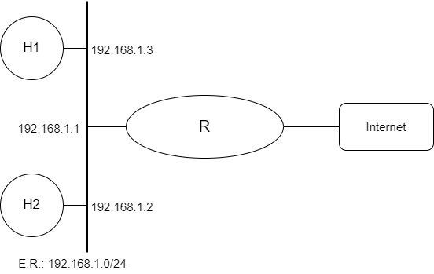

Camada de Aplicação (Proxy)

Prática de Laboratório 09
Camada de Aplicação (Proxy)
Introdução
Em redes de computadores, um proxy é um servidor (um sistema de computador ou uma aplicação) que age como um intermediário para requisições de clientes solicitando recursos de outros servidores.
Um cliente conecta-se ao servidor proxy, solicitando algum serviço, como um arquivo, conexão, página web ou outros recursos disponíveis de um servidor diferente e o proxy avalia a solicitação como um meio de simplificar e controlar sua complexidade. Os proxies foram inventados para adicionar estrutura e encapsulamento a sistemas distribuídos. Hoje, a maioria dos proxies é proxy web, facilitando o acesso ao conteúdo na World Wide Web e fornecendo anonimato.
Objetivos
- Permitir que os alunos tenham contato com regras de Proxy em máquinas FreeBSD.
Teoria abordada no experimento
Objetivo e funcionamento de um proxy de aplicação.
Material Necessário
- Interfaces de rede (NIC's)
- Máquinas com sistema FreeBSD
- Cabos de rede – par trançado normal
- Switches ou HUBs
- Software nas máquinas: ambiente FreeBSD básico, pacote Proxy server (Squid)
- Acesso à Internet – necessário
Roteiro
1. Montagem de rede interconectada para o experimento
- H1 (192.168.1.3), H2 (192.168.1.2) e R/eth0 (192.168.1.1).

2. Configurar os clientes na rede de testes e validar as configurações
Lembrem-se das etapas que foram percorridas na Prática de Laboratório 01.
3. Configuração dos equipamentos
Em R, instalar o SQUID (proxy server).
$ pkg install squid
Após a instalação, é possível verificar o arquivo de configuração do SQUID:
$ squid -f /usr/local/etc/squid/squid.conf -k parse
Adicione o serviço SQUID a configuração rc.conf (/etc/rc.conf):
squid_enable=yes
Inicie o serviço SQUID:
$ service squid start
Etapa 1
Adicionar as seguintes funcionalidades ao SQUID:
-
controle de acesso web por máquina (IP).
Edite o arquivo squid.conf (/usr/local/etc/squid/squid.conf) para adicionar uma regra de acesso e adicione a regra criada ao conjunto de regras de acesso HTTP seguido pelo tipo de acesso (allow/deny):
# acl nome_da_regra src IP/mascara
acl meu_ip src 192.168.1.3
# http_access allow/deny nome_da_regra
http_access allow meu_ip
-
black list (BL) para h1 e h2.
Edite o arquivo squid.conf (/usr/local/etc/squid/squid.conf) para adicionar regras de blacklist para os endereços IP de H1 e H2 e adicione as regras criadas ao conjunto de regras de acesso HTTP seguido pelo tipo de acesso (deny):
# acl nome_da_regra_bl_h1 src IP
acl blacklist_h1 src 192.168.1.3
# acl nome_da_regra_bl_h2 src IP
acl blacklist_h2 src 192.168.1.2
# http_access allow nome_da_regra_bl_h1
http_access deny blacklist_h1
# http_access allow nome_da_regra_bl_h2
http_access deny blacklist_h2
-
White list (WL) para h1 (e/ou h2).
Edite o arquivo squid.conf (/usr/local/etc/squid/squid.conf) para adicionar regras de whitelist para os endereços IP de H1 e adicione as regras criadas ao conjunto de regras de acesso HTTP seguido pelo tipo de acesso (allow):
# acl nome_da_regra_wl_h1 src IP
acl whitelist_h1 src 192.168.1.3
# http_access allow nome_da_regra_wl_h1
http_access allow whitelist_h1
Salve e reinicie o SQUID para que as configurações tenham efeito.
$ service squid restart
Verificar e descrever qual o nível de prevalência entre wl e bl.
Ajustar h1 e h2 para que percebam a presença do proxy para o acesso Internet (configuração manual). Obs.: R possui acesso Internet, mas não possui NAT.
- Em h1 e h2 adicionar seguinte configuração (também pode ser feito utilizando a configuração do browser):
$ sysctl net.inet.http.proxy=192.168.1.1:3128
- Em R, edite o arquivo sysctl.conf (/etc/sysctl.conf), para ativar o encaminhamento de pacotes IP (IP forwarding), remova o comentário da seguinte linha:
net.inet.ip.forwarding=1
- Ative a configuração.
$ sysctl net.inet.ip.forwarding=1
- Configure e reinicie o firewall para permitir as conexões de H1 e H2:
$ ipfw add 120 allow all from 192.168.1.2 to any
$ ipfw add 130 allow all from 192.168.1.3 to any
$ service ipfw restart
Etapa 2
Montar a configuração de rede abaixo e seguir os requisitos descritos a seguir.
- R/eth1 (172.25.0.1) e S1 (172.25.0.2).
- H1 (192.168.1.3), H2 (192.168.1.2) e R/eth0 (192.168.1.1).

-
Transferir a função de proxy para S1, incluindo as restrições definidas anteriormente.
Instale o SQUID no S1 e configure-o para atuar como um proxy para as conexões de H1 e H2. Isso incluiria configurar as regras de controle de acesso por IP, black list (BL) e white list (WL) para H1 e H2.
Configure R para encaminhar as conexões de H1 e H2 para S1:
$ ipfw add 140 forward ip from 192.168.1.2 to any via 172.25.0.2
$ ipfw add 150 forward ip from 192.168.1.3 to any via 172.25.0.2
-
Montar um SNAT em R para que S1 possa acessar a Internet.
Isso pode ser feito usando o recurso de NAT do firewall de R, adicionando as seguintes regras:
$ # <interface> é o nome da interface de rede que está conectada à Internet
$ ipfw add 160 nat 1 ip from 172.25.0.2 to any out via <interface>
- Ajustar a tabela de rotas para que h1 e h2 consigam pingar em S1.
$ route add -net 172.25.0.0/24 172.25.0.2
- Montar regras em R (e onde for preciso) para garantir o proxy transparente (ou seja, h1 e h2 não sabem da presença de um proxy). Obs.: Verificar se é possível resolver o desvio para o proxy usando um chain.
$ ipfw add redirect_port tcp from 192.168.1.2 80 to 172.25.0.2 8080
$ ipfw add redirect_port tcp from 192.168.1.3 80 to 172.25.0.2 8080
Questões para Estudo
Referências Bibliográficas
ROGÉRIO. FreeBSD com proxy Squid - Revista Infra Magazine 4. Devmedia, 2012. Disponível em: https://www.devmedia.com.br/freebsd-com-proxy-squid-revista-infra-magazine-4/23440. Acesso em: 18 dez. 2022.
Linuxhelp.com. How to install squid proxy server on freeBSD. Data desconhecida. Linux Help. Disponível em: https://www.linuxhelp.com/how-to-install-squid-proxy-server-on-freebsd. Acesso em: 18 dez. 2022.
FreeBSD.org. squid. Data desconhecida. FreeBSD Manual Pages. Disponível em: https://www.freebsd.org/cgi/man.cgi?query=squid. Acesso em: 18 dez. 2022.
Wikipedia.org. Proxy. Data desconhecida. Wikipedia. Disponível em: https://pt.wikipedia.org/wiki/Proxy. Acesso em: 18 dez. de 2022.
WETHERALL, D. J; TANENBAUM, A. S. Computer networks. Pearson Education, 2013.
LUCAS, M. W. Networking for Systems Administrators. 5th. ed. USA: Tilted Windmill Press, 2019.